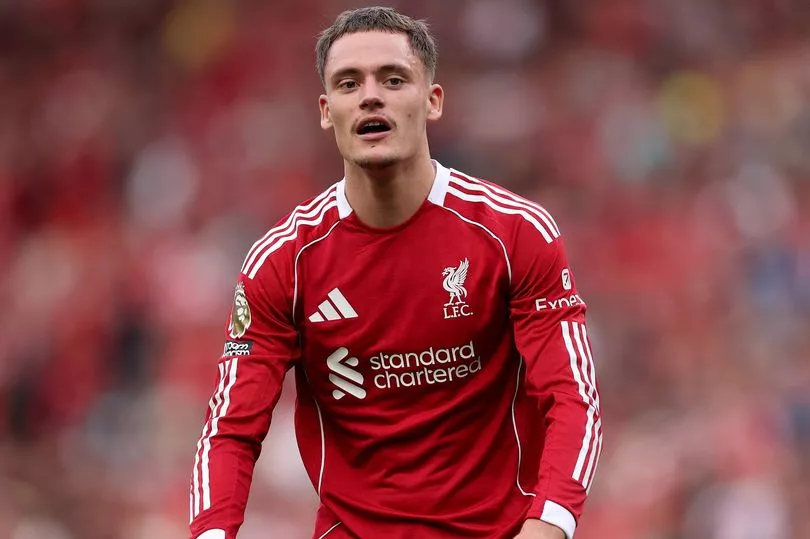

<article class="story-card compact secondary-headline" style="height: 100%; box-shadow: 0 8px 24px rgba(0,0,0,0.12); border-radius: 20px; overflow: hidden; transition: all 0.4s cubic-bezier(0.4,0,0.2,1); background: white;">
    <a href="articles/premier-league-transfer-window-2025-record-breaking-3-billion.html" class="story-link" style="display: flex; flex-direction: column; height: 100%;">
        <div class="story-image-wrapper" style="height: 200px; position: relative; overflow: hidden; border-radius: 20px 20px 0 0;">
            
            <div class="story-overlay" style="background: linear-gradient(to bottom, rgba(0,0,0,0) 0%, rgba(0,0,0,0.3) 60%, rgba(0,0,0,0.7) 100%); position: absolute; inset: 0;">
                <span class="story-category" style="position: absolute; top: 16px; left: 16px; font-size: 10px; font-weight: 700; letter-spacing: 1px; padding: 6px 12px; background: linear-gradient(135deg, #ffa500 0%, #ff6347 100%); color: white; border-radius: 20px; text-transform: uppercase; box-shadow: 0 4px 10px rgba(255,165,0,0.3);">Transfer Special</span>
            </div>
        </div>
        <div class="story-content-wrapper" style="padding: 24px; background: white; flex-grow: 1; display: flex; flex-direction: column; border-radius: 0 0 20px 20px;">
            <h2 class="story-headline" style="font-size: 1.25rem; line-height: 1.3; margin-bottom: 12px; font-weight: 800; color: #0a0a0a; letter-spacing: -0.02em; font-family: -apple-system, BlinkMacSystemFont, 'Segoe UI', sans-serif;">
                Premier League Shatters £3 Billion Transfer Record
            </h2>
            <p class="story-summary" style="font-size: 0.9rem; line-height: 1.6; margin-bottom: 16px; color: #4a5568; font-weight: 400; flex-grow: 1;">
                Transfer window closes with unprecedented £3.087 billion spending. Liverpool leads with £442 million in acquisitions.
            </p>
            <div class="story-footer" style="display: flex; justify-content: space-between; align-items: center; padding-top: 16px; border-top: 1px solid rgba(0,0,0,0.06); margin-top: auto;">
                <span class="story-date" style="font-size: 0.8rem; color: #718096; font-weight: 500;">Sep 6, 2025</span>
                <span class="read-more" style="font-weight: 600; color: #667eea; font-size: 0.85rem; display: flex; align-items: center; gap: 4px;">Read <svg width="12" height="12" viewBox="0 0 24 24" fill="none" stroke="currentColor" stroke-width="2.5" stroke-linecap="round" stroke-linejoin="round"><line x1="5" y1="12" x2="19" y2="12"></line><polyline points="12 5 19 12 12 19"></polyline></svg></span>
            </div>
        </div>
    </a>
</article>